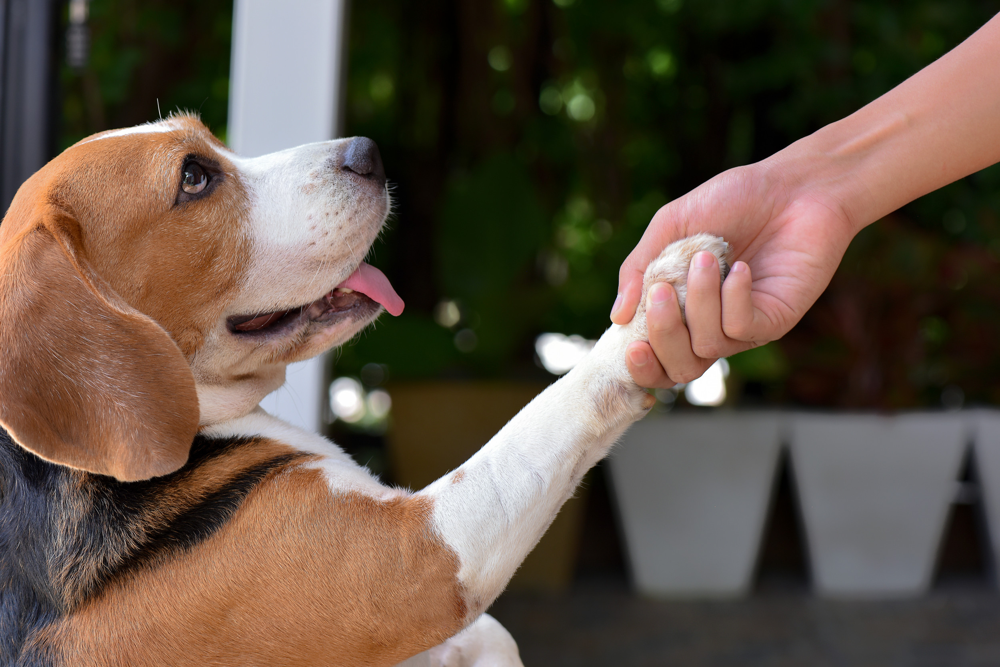

Effective and Humane Training Tips
The Power of Positive Reinforcement
Positive reinforcement is the cornerstone of effective and humane pet training. This method involves rewarding desired behaviors with treats, praise, or toys, encouraging your pet to repeat those behaviors. It's not just about giving treats; it's about timing the reward correctly to reinforce the specific action you want.
Consistency is Key
Consistency in your commands, rules, and reactions is crucial for successful training. All family members should use the same cues and enforce the same boundaries. This clarity helps your pet understand what's expected and reduces confusion.
Patience Pays Off
Learning takes time, especially for animals. Be patient and don't expect instant results. Celebrate small victories along the way, and remember that every pet learns at their own pace. Rushing or becoming frustrated can hinder progress and damage your relationship with your pet.
Keep Training Sessions Short and Fun
Aim for short training sessions (5-10 minutes) multiple times a day rather than one long session. This keeps your pet engaged and prevents boredom or frustration. Always end on a positive note to keep your pet eager for the next session.
Never Use Punishment
Avoid physical punishment or yelling. These can damage your relationship with your pet and lead to fear or aggression. Instead, focus on redirecting unwanted behaviors and reinforcing positive ones.
Socialization is Training Too
Proper socialization is a crucial part of training, especially for young pets. Expose your pet to a variety of people, animals, and environments in a positive way to help them become well-adjusted adults.
Use Clicker Training for Precision
Clicker training can be an excellent tool for precise timing in positive reinforcement. The click marks the exact moment your pet performs the desired behavior, making it clear what they're being rewarded for.
Tailor Training to Your Pet's Personality
Every pet is unique. Some may be food-motivated, while others prefer praise or play. Understand what motivates your pet and use that to your advantage in training.
Remember, the goal of training is to build a strong, positive relationship with your pet while teaching them how to live harmoniously in your home. With patience, consistency, and positive reinforcement, you can achieve this goal and enjoy a well-behaved, happy pet.